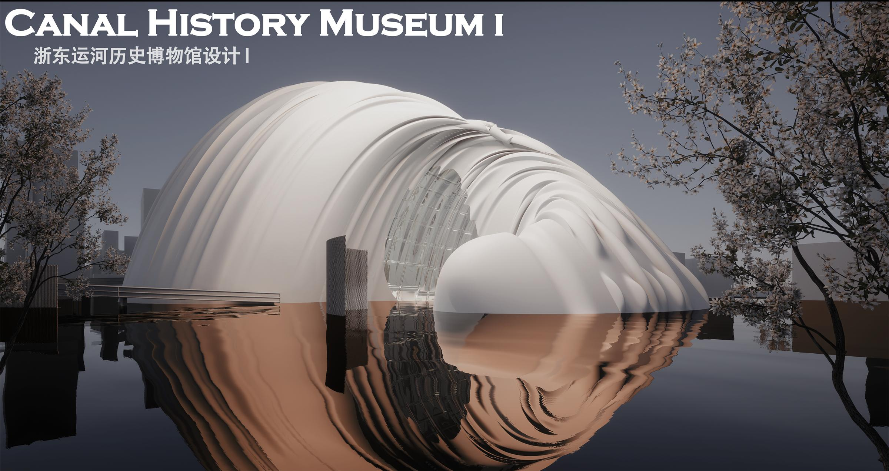
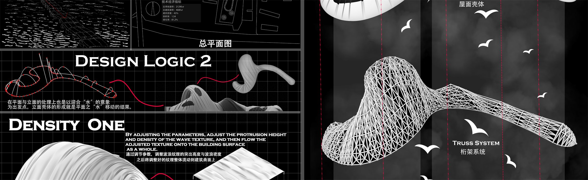
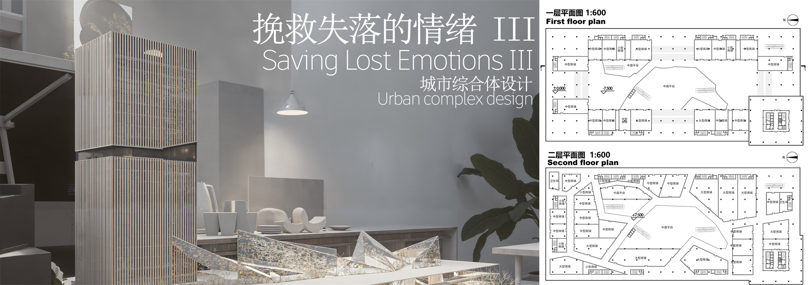
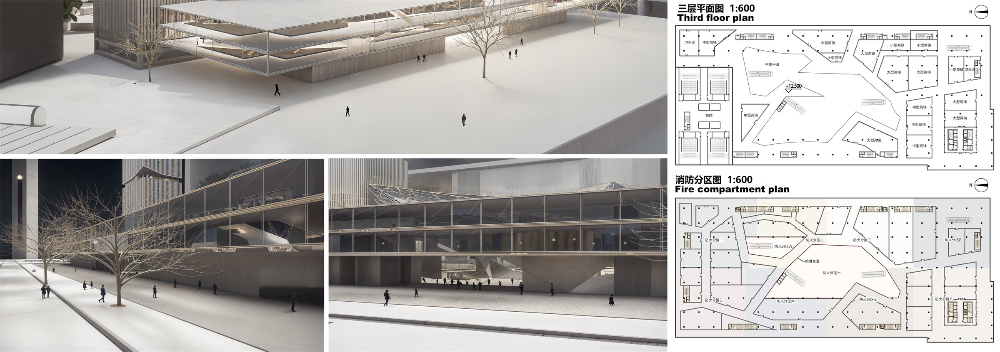
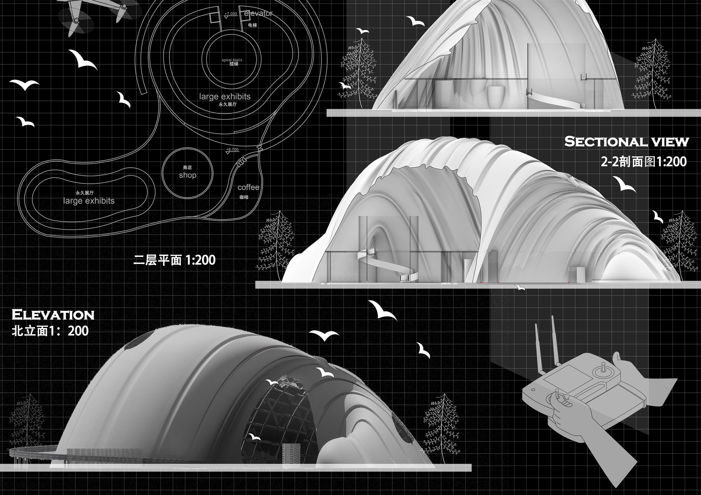

PROJECT NO. 01 · FIG. 1
浙东运河博物馆设计GRAND CANAL MUSEUM
设计说明 DESIGN STATEMENT
场地位于浙东运河绍兴柯桥段，古纤道穿城而过。设计将场地与建筑在「意象」上融为一体——让整个游览过程如在「水之上」，无论身处场地还是建筑之中，都行走在古纤道之上。立面壳体以平面之「水」的移动为生成逻辑：通过调节参数控制波浪纹理的突出高度与密度，将纹理整体流动到建筑曲面，最终形成与运河对话的屋面形态。
The site lies on the Keqiao section of the East Zhejiang Canal in Shaoxing, where the ancient towpath threads through the town. Design merges site and building into one image: the whole visit reads as a walk "upon the water" — whether in the field or inside the building, one is always walking the old towpath. The shell facade grows from the movement of the "water" plan: parameters tune the height and density of wave textures, which are then flowed onto the curved surface, forming a roof in dialogue with the canal.
主效果图 MAIN RENDERING
博物馆沿河岸展开，水平体量与水面对话，屋面壳体的波浪纹理回应着水面的光影。


设计逻辑 DESIGN LOGIC
设计逻辑：将场地与建筑在「意象」上融为一体，即「水」——让整个游客游览的过程就如行走在水之上；无论身处场地之中还是建筑之中，都如行走在古纤道之上。图为古纤道改造图与现状图。
Design logic: site and building are fused in one image — water. The visitor's whole route reads as walking upon the water; whether in the field or in the building, one walks the ancient towpath. Shown are the towpath transformation diagram and its present condition.

总体布局与纹理生成 GENERAL LAYOUT & WAVE TEXTURE


总平面与技术经济指标：建筑密度约 43%。纹理生成逻辑（DESIGN LOGIC 2）：平面与立面的处理以迎合「水」的意象为出发点——立面壳体的形成就是平面之「水」移动的结果。通过调节参数，调整波浪纹理的突出高度与密度，再将调整好的纹理整体流动到建筑曲面上。
Master plan with technical-economic indices (site coverage about 43%). Texture logic (Design Logic 2): plan and elevation both follow the image of "water" — the shell facade is the result of the "water" plan in motion. By adjusting parameters, the protrusion height and density of the wave texture are tuned, and the adjusted texture is flowed onto the building surface as a whole.
爆炸结构图 EXPLODED STRUCTURE
波浪纹理的迭代优化（DENSITY 2 → 3）：继续调整、优化，直至达到合适的密度与高度，形成最终纹理。爆炸结构图分解出屋面壳体、桁架系统与一层框架系统三个层次。
Iterative refinement of the wave texture (Density 2 → 3): keep adjusting and optimising until an appropriate density and height form the final texture. The exploded structure reveals three layers: roof shell, truss system and first-floor framework system.


场地分析 SITE ANALYSIS

古纤道发展历史：位于江南浙东运河沿岸，自东而西穿越绍兴，绵延 40 余公里，是古人行舟背纤的水中长桥。浙东运河柯桥段历史悠久，自东汉始历经晋代、南宋、元代、明代各时期的修缮与营建；2014 年，浙东运河与古纤道共同列入世界遗产名录。柯桥历史肌理：现代建筑多以坡屋顶与灰黑白对比转译古建筑的屋顶形式与粉墙黛瓦意蕴；柯桥古镇现存季家台门、沈家台门等区级文保单位。
History of the ancient towpath: along the East Zhejiang Canal in Jiangnan, it crosses Shaoxing from east to west for over 40 km — a long bridge in the water where boatmen once hauled vessels. The Keqiao section dates from the Eastern Han and was repaired through the Jin, Southern Song, Yuan and Ming dynasties; in 2014 the canal and towpath were jointly inscribed on the World Heritage List. Keqiao fabric: modern buildings translate grey-black-and-white roofs and white-washed walls, while Tai-men courtyard houses such as Ji's and Shen's survive as listed relics.
一层平面与西立面 GROUND FLOOR & WEST ELEVATION
一层平面（1:200）：门厅、展厅与研究室沿展线布置，西立面（1:200）随屋面壳体起伏。附展厅效果图。
Ground floor plan (1:200): lobby, galleries and research rooms along the exhibition route; the west elevation (1:200) rises and falls with the roof shell. With a gallery rendering.

地下层与二层平面 LOWER & SECOND FLOOR


负一层平面（1:200）：临时展厅、数据库与藏品库藏于地下；二层平面（1:200）围绕中庭组织永久展陈与公共空间。
Basement plan (1:200): temporary exhibition, database and collection library tucked below ground; second floor plan (1:200) organises permanent galleries and public space around a central court.
永久展厅与北立面 PERMANENT GALLERY & NORTH ELEVATION
永久展厅与北立面（1:200）：高大的展陈空间收束于北侧立面，屋面壳体在此回望古纤道与运河。
Permanent gallery with north elevation (1:200): tall exhibition space is gathered on the north front, where the roof shell turns back towards the towpath and the canal.

